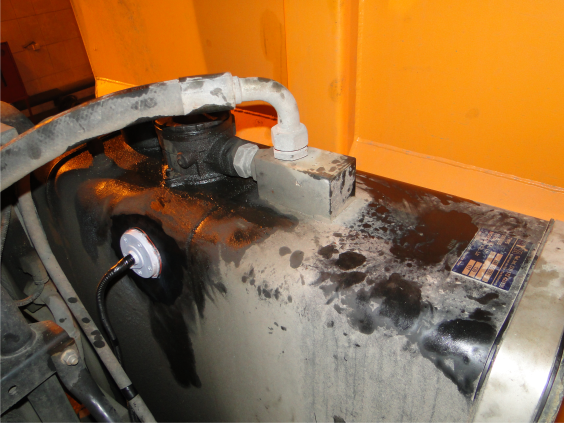

Система контроля гидравлического масла СКМ
В машинах и механизмах, применяемых в строительной, дорожной и коммунальной технике, широкое распространение получили рабочие органы с гидравлическим приводом. В приводах используется гидравлическое масло, гидронасосы, гидромоторы, рукава высокого давления (РВД), а также иные узлы и устройства. Эти машины и механизмы используют дорогостоящие комплектующие, которые рассчитаны на интенсивную работу в течение длительного времени.
Однако, гидрокомпоненты могу очень быстро выйти из строя при возникновении нештатной ситуации, например, при обрыве РВД, закипании или переохлаждении гидравлического масла.
Специалисты нашей компании разработали и внедрили систему контроля гидравлического масла (СКМ), которая позволяет предупреждать порчу гидрокомпонентов и вытекание большого количества масла при возникновении в гидросистеме аварийных ситуаций.

Однако, гидрокомпоненты могу очень быстро выйти из строя при возникновении нештатной ситуации, например, при обрыве РВД, закипании или переохлаждении гидравлического масла.
Специалисты нашей компании разработали и внедрили систему контроля гидравлического масла (СКМ), которая позволяет предупреждать порчу гидрокомпонентов и вытекание большого количества масла при возникновении в гидросистеме аварийных ситуаций.
система СКМ
позволяет контролировать уровень и температуру гидравлического масла машин и/или механизмов и выдавать оператору предупреждающий аварийный сигнал при понижении уровня или закипании гидравлического масла.
дополнительные опции
технические характеристики СКМ
Назначение оборудования
Контроль уровня и температуры гидравлического масла
Состав специализированного оборудования
Параметры оборудования
с закольцовкой потока «бак - помпа - бак»
позволяет контролировать уровень и температуру гидравлического масла машин и/или механизмов и выдавать оператору предупреждающий аварийный сигнал при понижении уровня или закипании гидравлического масла.
дополнительные опции
автоматический гидроотсекатель (закольцовывает насос гидросистемы при возникновении аварийной опасности),
сигнализатор низкой отрицательной температуры, системы предпускового подогрева (при низких температурах) и/или вентилятор охлаждения гидравлического масла (при чрезмерном разогреве масла),
дублирующие датчики (для обеспечения повышенной надежности и безотказности) и др.
технические характеристики СКМ
Назначение оборудования
Контроль уровня и температуры гидравлического масла
Состав специализированного оборудования
датчик уровня гидравлического масла
датчик температуры масла
световая аварийная индикация
звуковая аварийная индикация
электронная система защиты от ложных срабатываний
функция диагностики
Параметры оборудования
Сигнализация падения уровня масла
(подача сигнала «тревога») от 10 литров
(подача сигнала «тревога») от 10 литров
Температура индикации перегрева масла свыше 105°С
Сила звуковой сигнализации от 70дб
Автоматическое аварийное отключение автономного двигателя
Установка нижнего порога температуры блокировки пуска
Установки клапана отсечки гидравлического масла
с закольцовкой потока «бак - помпа - бак»